Pivot-Tabelle
Wks-Pivot-Table
Eine Pivot-Tabelle ist ein Hilfsmittel zur Datenzusammenfassung, da im Bereich Datenanalysebereich weit verbreitet ist. Die Tabelle wird erstellt, indem ein Datensatz, der aus über eine Vielzahl von Variablen gesammelten Beobachtungen besteht, genommen wird und zwei kategoriale Variablen, die interessieren, ausgewählt werden -- ihre Namen seien var1 und var2. Alle möglichen Werte von var1 definieren dann die Zeilen in der Tabelle, und alle möglichen Werte von var2 definieren die Spalten in der Tabelle. Tabellenzellen enthalten dann Werte, die sich aus der Schnittmenge von Zeilen- und Spaltenwerten ergeben. Eine Parallele der Pivot-Tabelle ist eine Matrix mit var1 als Zeilen, var2 als Spalten sowie den Daten der Pivot-Tabelle als Elemente der Matrix. Sie können schnell eine ähnliche Datenzusammenfassung für verschiedene Datensätze erstellen, indem Sie eine Analysevorlage mit Pivot-Tabelle speichern. Origins Pivot-Tabelle unterstützt außerdem Folgendes:
-
- Zusammenfassung von Daten nach Anzahlen; Ermitteln von Summe, Mittelwert bzw. der Werte von Minimum/Maximum
- Angabe der Gesamtzahlen für Zeilen und Spalten
- Sortieren der ausgegebenen Zeilen und Spalten nach Zeilengesamtangaben oder Beschriftungen
- Normieren nach Bruchteilen oder Prozentsätzen
- Kombination von kleineren Werte in einer "anderen" Spalte
- Anpassen von Parametern und unmittelbare Neuberechnung
Um dieses Hilfsmittel zu öffnen:
- Klicken Sie auf dieses Arbeitsblatt, das Sie analysieren möchten.
- Klicken Sie auf Restrukturieren: Pivot-Tabelle, um den Dialog wpivot zu öffnen.
Der Dialog wpivot verwendet die X-Funktion wpivot.
Dialogoptionen
- 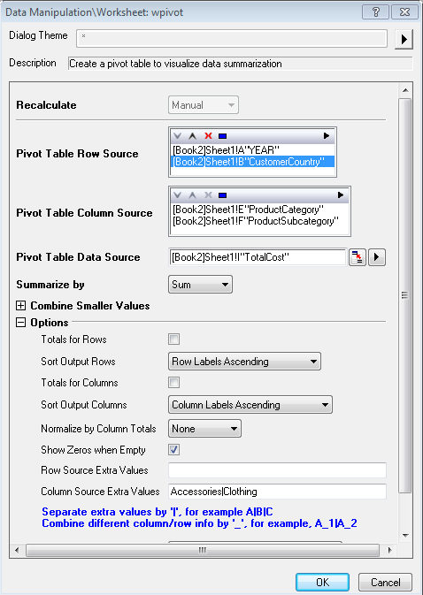
Zeilenquelle der Pivot-Tabelle
Legen Sie den Spaltenbereich fest, der als Zeilenquelle für die Pivot-Tabelle verwendet wird. Daten in dem Quellarbeitsblatt mit dem gleichen Namen im Zeilenquellbereich werden als eine einzige Zeile in der Pivot-Tabelle angezeigt. Das folgende Diagramm stellt die Definition der Zeilenquelle dar. Sie können einen oder mehrere Datenbereiche als Zeilenquelle für die Pivot-Tabelle wählen.
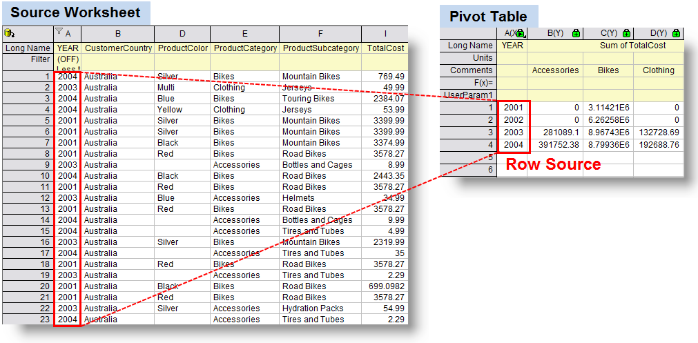
Das folgende Diagramm stellt die Definition einer mehrfachen Zellenquelle für die Pivot-Tabelle dar.
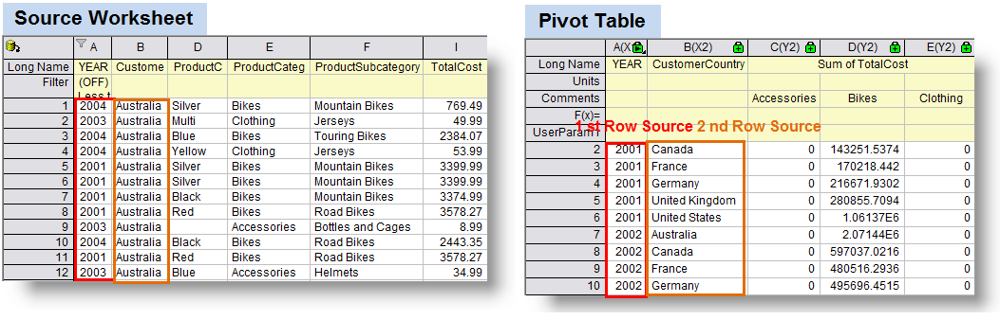
Enthalten sind hierbei ein Anzeigefeld und eine Symbolleiste mit fünf Schaltflächen  :
:
| Anzeigefeld |
Die ausgewählte/n Spalte/n werden in diesem Feld angezeigt. Um diese Analyse durchzuführen, müssen Sie mindestens 1 Spalte für die Zeilenquelle auswählen. |
Dreieckige Schaltfläche für Auswählen  |
Klicken Sie auf diese Schaltfläche und wählen Sie dann eine Spalte vom Menü aus; oder klicken Sie auf Spalten auswählen, um den Spaltenbrowser zu öffnen, und fügen Sie (eine) Spalte/n in das Anzeigefeld als Zeilenquelle der Pivot-Tabelle hinzu. Klicken Sie erneut auf diese Schaltfläche, um eine weitere Spalte als zusätzliche Zeilenquelle hinzuzufügen. |
| Schaltfläche Entfernen |
Die ausgewählten Datenbereiche werden aus dem Anzeigefeld entfernt. Diese Schaltfläche ist verfügbar, wenn Sie eine oder mehrere Spalten in dem Feld auswählen. |
Schaltfläche Nach oben verschieben  |
Die ausgewählten Datenbereiche werden im Anzeigefeld nach oben verschoben. Verwenden Sie diese Schaltfläche, um die Zeilenquellspalten zu ordnen. Die Ergebnisse der Pivot-Tabelle folgen dieser Ordnung. |
Schaltfläche Nach unten verschieben  |
Die ausgewählten Datenbereiche werden im Anzeigefeld nach unten verschoben. Verwenden Sie diese Schaltfläche, um die Zeilenquellspalten zu ordnen. Die Ergebnisse der Pivot-Tabelle folgen dieser Ordnung. |
Schaltfläche Alle auswählen  |
Alle Datenbereiche im Feld Anzeige werden ausgewählt. |
Spaltenquelle der Pivot-Tabelle
Legen Sie den Spaltenbereich fest, der als Spaltenquelle für die Pivot-Tabelle verwendet wird. Daten in dem Quellarbeitsblatt mit dem gleichen Namen im Spaltenquellbereich werden als eine einzige Zeile in der Pivot-Tabelle angezeigt. Das folgende Diagramm stellt die Definition der Spaltenquelle dar. Es sollte festgehalten werden, dass die Spalteninformationen in anderen Spaltenbeschriftungszeilen zugewiesen werden können. Sie können einen oder mehrere Datenbereiche als Spaltenquelle für die Pivot-Tabelle wählen. Die Anordnung der Spaltenquelle für die Pivot-Tabelle ähnelt der der Zeilenquelle.
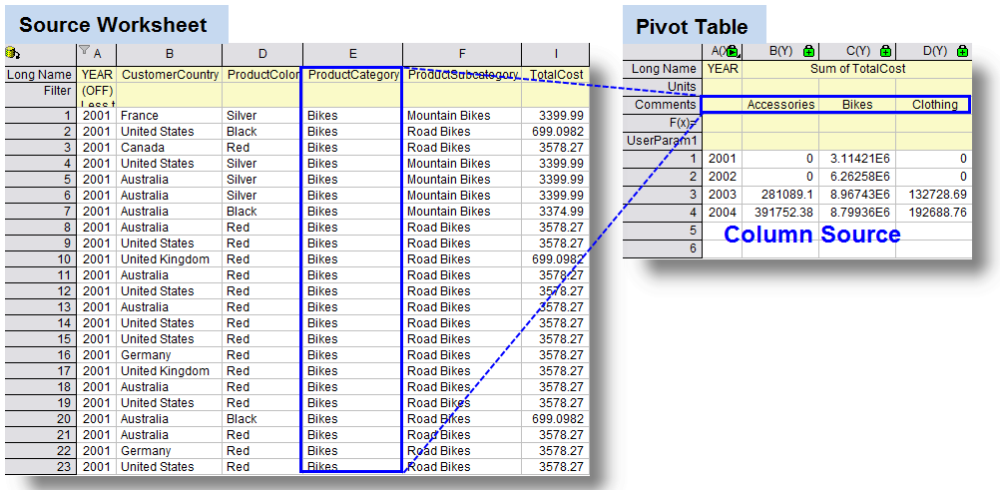
Hinweis:
- Dieser Teil beinhaltet ein Anzeigefeld und eine Symbolleiste mit fünf Schaltflächen . Um mehr über die Bedienelemente zu erfahren, greifen Sie bitte auf die Tabelle im Abschnitt Zeilenquelle der Pivot-Tabelle zurück.
- Der Wert von Spaltenquelle wurde standardmäßig in die Spaltenbeschriftungszeile Kommentare eingefügt; er kann auch in andere Spaltenbeschriftungszeilen eingefügt werden wie Langname, indem die Auswahlliste Spalteninfo eingeben in der Optionen konfiguriert wird.
|
Datenquelle der Pivot-Tabelle
Dies ist nur verfügbar, wenn für Zusammenfassen nach (die Variable Methode) nicht Anzahl gewählt wurde. Dies sind die Datenwerte, die aus einer eindimensionalen Spalte in einer zweidimensionalen matrixartigen Pivot-Tabelle zusammengefasst werden.
- Zusammenfassen nach Max, Min, Mittelwert oder Summe
- Die Art und Weise, wie Daten in einer Pivot-Tabelle angeordnet sind, ähnelt der Zusammenfassung der Daten nach Max Min, Mittelwert oder Summe. Der folgende Screenshot ist ein Beispiel für die Zusammenfassung von Daten nach Summe
- 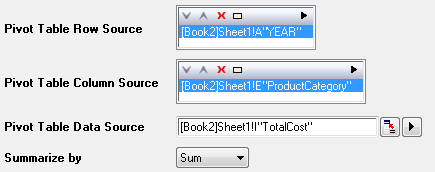
- Im folgenden Beispiel entsprechen die Gesamtkostendaten der Zelle (2001, Bikes) der Summe dieser Zellen in Spalte TotalCost mit folgenden Kriterien: ProductCategory ist Bikes und YEAR ist 2001.
- 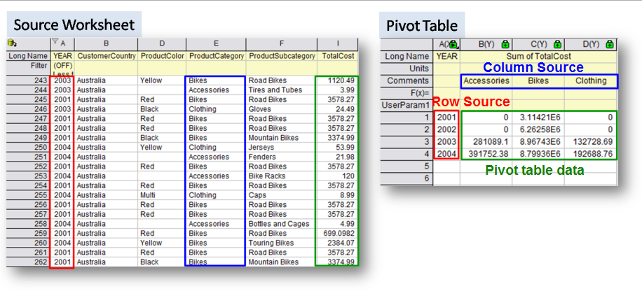
- Zusammenfassen nach Anzahl
- Wenn dagegen Anzahl in der Auswahlliste Zusammenfassen nach ausgewählt ist, gibt die Tabelle nur die Anzahl der Zellen mit der gleichen Position ein, die eine Verbindung zwischen Zeilenquelle und Spaltenquelle herstellen.
Kleinere Werte kombinieren
Mit der Option Kleinere Werte kombinieren können kleinere Werte in einer "anderen" Kategorie kombiniert werden, so dass sich am Ende weniger anzuzeigende Kategorien ergeben. Weitere Einzelheiten finden Sie in dem Beispiel unten.
- Kombinationsrichtung: Wenn nicht "Kein", dann wählen Sie entweder die Kategorie Zeile oder Spalte, um die Funktion zu aktivieren. Die Kombination von kleineren Werten in beiden Kategorien wird zurzeit nicht unterstützt.
- Modus: Diese Auswahlliste legt die Methode zum Kombinieren von kleineren Werten der zusammengefassten Werte fest. Dies kann Anzahl, Summe, Mittelwert, Min oder Max sein.
| Hinweis: Sobald der Modus ausgewählt ist, können Sie auch andere ergänzende Optionen festlegen, wie Prozent, Referenzzeilenwert/Referenzspaltenwert, Oberen N und Spalten-/Zeilenbeschriftung unter der Auswahlliste Modus. Diese Optionen ändern sich entsprechend dem ausgewählten Modus. |
-
- Nach Prozent der Gesamtsumme: Die Kategorien Zeile/Spalte mit den Prozentangaben des zusammengefassten Werts (Anzahl/Summe/Mittelwert/Min/Max) berücksichtigen die Gesamtsummen, die einen Schwellenwert in Prozent überschreiten und werden aufgelistet; die Übrigen werden dagegen reduziert und in einer Kategorie mit dem Namen Others standardmäßig kombiniert. Sie können den Schwellenwert in dem Feld Prozent unter der Auswahlliste Modus eingeben.
-
- 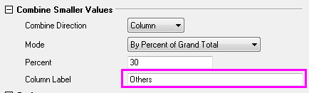
-
- Um den Standardnamen der reduzierten Kategorie zu ändern, legen Sie den neuen Namen in dem Feld Zeilen-/Spaltenbeschriftung unter der Auswahlliste Modus fest. In dem folgenden Screenshot wurde der Standardname der reduzierten Kategorie in Other Smaller Item umbenannt und andere Kategorien mit kleineren Prozentangaben wurde in dieser Kategorie reduziert.
-
- 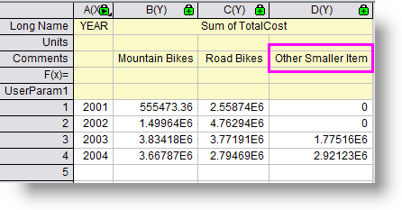
-
- Nach Prozent der Referenzzeile/-spalte: Die Kategorien Zeile/Spalte mit Prozentangaben des zusammengefassten Werts in Referenzspalten/-zeilen berücksichtigen die Gesamtsummen, die einen Schwellenwert in Prozent überschreiten und werden aufgelistet; die Übrigen werden dagegen reduziert und in einer Kategorie (Standard) mit dem Namen Other standardmäßig kombiniert. Wählen Sie einen der verfügbaren angezeigten Werte, um die Kategorie der Referenzspalte/-zeile in Referenzspaltenwert/Referenzzeilenwert festzulegen. Einzelheiten zur benutzerdefinierten Anpassung der Prozentangabe des Schwellenwerts und des Namens der reduzierten Spalte lesen Sie bitte unter Nach Prozent der Gesamtsumme unten.
-
- Oberen N der Gesamtsumme: Der zusammengefasste Wert von jeder Kategorie Zeile/Spalte wird in eine Rangfolge gebracht und die oberen N Kategorien der Zeilen/Spalten wird aufgelistet. Legen Sie die Oberen N und die Zeilen-/Spaltenbeschriftung unter der Auswahlliste Modus fest.
-
- Oberen N der Referenzzeile/-spalte: Der zusammengefasste Wert von jeder Kategorie Zeile/Spalte in der Kategorie Spalten-/Zeilenreferenz wird in eine Rangfolge gebracht und die oberen N Kategorien der Zeilen/Spalten werden aufgelistet. Legen Sie die Oberen N und die Zeilen-/Spaltenbeschriftung unter der Auswahlliste Modus fest.
-
- Referenzzeilenwert/Referenzspaltenwert: Legen Sie die Referenzzeile/-spalte fest, wenn entweder Nach Prozent der Referenzzeile/-spalte oder Oberen N der Referenzzeile/-Spalte für Modus gewählt wurde.
-
- Prozent: Bestimmen Sie den Prozentwert zum Festlegen von kleinen Werten, wenn entweder Nach Prozent der Gesamtsumme oder Nach Prozent der Referenzzeile/-spalte für Modus gewählt wurde.
-
- Spalten-/Zeilenbeschriftung: Passen Sie den reduzierten Kategorienname beim Kombinieren von kleineren Werten benutzerdefiniert an.
Optionen
- Gesamtsumme für Zeilen: Diese Option fügt eine Spalte zu die Gesamtsumme der Zeilen hinzu.
- 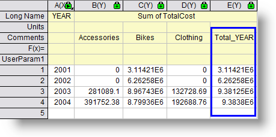
- Ausgabezeilen sortieren: Diese Option definiert die Sortierungsordnung der ausgegebenen Zeilen.
-
- Zeilenbeschriftungen aufsteigend: Diese Option sortiert die Zeilen entsprechend der Zeilenbeschriftungen in aufsteigender Reihenfolge.
Bitte sehen Sie sich das folgende Beispiel an. Wenn nur Year als die einzige Zeilenquelle verwendet wird, wurde das Jahr in aufsteigender Reihenfolge sortiert. Bitte sehen Sie sich das folgende Beispiel an. Wenn mehr als ein Bereich als Zeilenquellen ausgewählt wurden, ordnet die Pivot-Tabelle die Daten entsprechend der Abfolge der Zeilenquellen an.
- 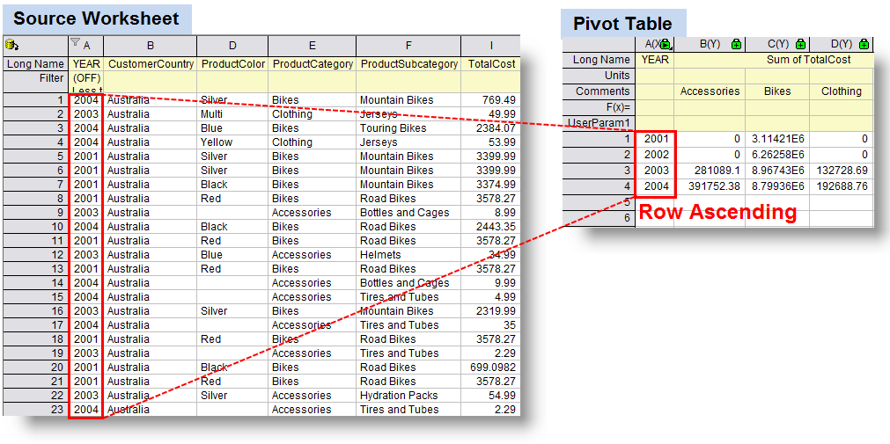
-
- Zeilenbeschriftungen abfallend: Diese Option sortiert die Zeilen entsprechend der Zeilenbeschriftungen in absteigender Reihenfolge, also ähnlich wie bei der Option Zeilenbeschriftungen aufsteigend, aber mit umgekehrter Abfolge der sortierten Daten.
-
- Aufsteigend nach Zeilen gesamt: Diese Option sortiert die Gesamtsummen der Zeilen in aufsteigender Reihenfolge. In diesem Fall sind nur numerische Daten zugelassen als Datenquelle der Pivot-Tabelle. Beachten Sie, dass diese Option ausgewählt kann, unabhängig davon, ob das Kontrollkästchen Gesamtsumme für Zeilen aktiviert ist oder nicht.
-
- Abfallend nach Zeilen gesamt: Diese Option sortiert die Gesamtsummen der Zeilen in absteigender Reihenfolge. Entsprechend der Option Aufsteigend nach Zeilen gesamt sind auch hier nur numerische Daten als Datenquelle der Pivot-Tabelle zugelassen.
-
- Kein: Zeilen werden nicht sortiert.
- Gesamtsumme für Spalten: Entsprechend der Option Gesamtsumme für Zeilen wird eine Zeile für die Gesamtsumme der Spalten hinzugefügt.
- Ausgabespalten sortieren: Entsprechend der Option Ausgabezeilen sortieren wird eine Sortierung anhand der Spaltenbeschriftung oder Gesamtsumme der Spalten in aufsteigender/abfallender Reihenfolge vorgenommen; andernfallsKein.
- Nach Gesamtsummen der Spalte normieren
-
- Kein: Daten werden nicht normiert.
-
- Bruchteil: Daten werden in jeder Spalte nach Spaltengesamtsumme normiert und in Bruchschreibweise angegeben.
-
- Prozent: Die Daten werden in jeder Spalte nach Spaltengesamtsumme normiert und in Prozentschreibweise angegeben.
- Null zeigen, wenn leer: Anstatt leeren Zellen werden Nullen für fehlende Werte angezeigt. Es ist nur verfügbar, wenn für Zusammenfassen nach nicht Anzahl ausgewählt ist.
- Zusätzliche Werte der Zeilenquelle: Diese Option wird weniger häufig verwendet. Einzelheiten lesen Sie dazu bitte unter Zusätzliche Werte der Spaltenquelle unten.
- Zusätzliche Werte der Spaltenquelle: Diese Option bietet zusätzliche Kategorien, die in der Quelldatenspalte fehlen können. Dies ist nützlich, wenn Sie sichergehen wollen, dass sich alle erforderlichen Kategorien in der Ergebnistabelle befinden. Kategorien, die in den Eingabedaten fehlen, werden möglicherweise als 0 angezeigt (wenn zusammengefasst nach Anzahl und Summe) oder fehlende Werte "--" (wenn zusammengefasst nach Min oder Max).
Angenommen, Sie haben den folgenden Datensatz (siehe Quellarbeitsblatt in dem Screenshot unten). Es handelt sich um die Zusammenfassung des Umsatzes von mehreren Produkten (Bike, Accessories und Clothing) in verschiedenen Ländern vom Jahr 2001 bis Jahr 2004. Sie möchten eine Zusammenfassung erstellen, die die Gesamtkosten von verschiedenen Produkten für jedes Jahr darstellt. Sie können YEAR als Spaltenkategorie und Categories als Zeilenkategorie festlegen. Allerdings fehlen die Verkaufszahlen von Accessories und Clothing von 2001 und 2002. Die folgenden zwei Situationen zeigen das unterschiedliche Ergebnis an, je nach dem, ob Zusätzliche Werte der Spaltenquelle verwendet wird oder nicht.
-
- Ohne zusätzliche Spaltenwerte
- Wenn Sie das Hilfsmittel Daten aus Arbeitsblatt extrahieren verwenden, um die Daten mit Bedingung als: YEAR <= 2002 anzuzeigen, dann erstellen Sie eine Pivot-Tabelle der Summe der Gesamtkosten ohne Zusätzliche Spaltenwerte, basierend auf den neu extrahierten Abfragedaten. Die Pivot-Tabelle schließt die Kategorien Accessories und Clothing aus und zeigt nur die Kategorie Bikes an, die übrig gebliebene Datenaufzeichnungen von YEAR 2001 und 2002 im Quellarbeitsblatt enthält.
-
- 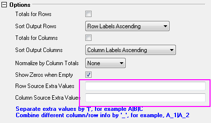
-
- 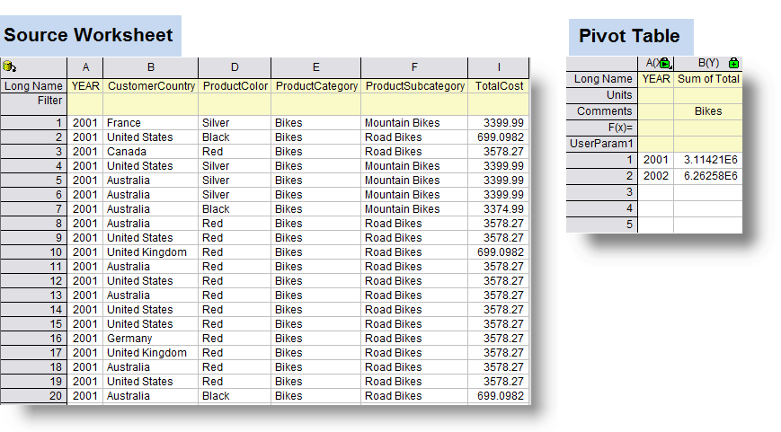
-
- Zusätzliche Spaltenwerte verwenden
-
- Wenn Sie dagegen eine ähnliche Pivot-Tabelle erstellen, aber Zusätzliche Werte der Spaltenquelle aktivieren, werden alle drei Kategorien in der Pivot-Tabelle angezeigt - trotz der fehlenden Aufzeichnungen. Diese zwei fehlenden Kategorien werden mit Nullsumme gezeigt.
-
- 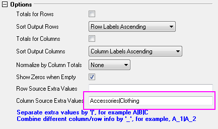
-
- 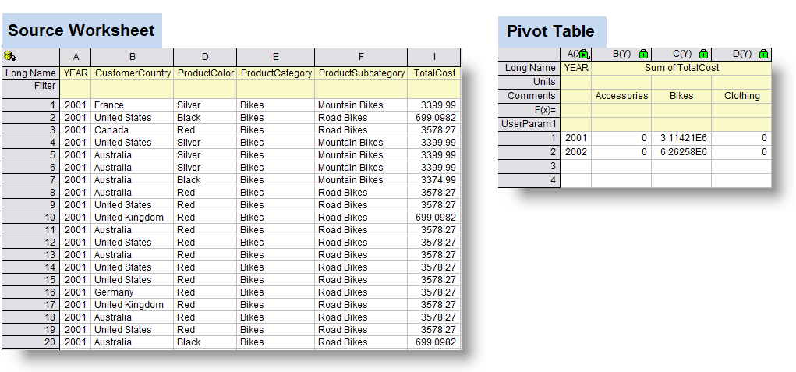
-
-
|
Hinweis:
Die Funktion Zusätzliche Werte der Spaltenquelle ist extrem wichtig, wenn Sie die Pivot-Tabelle verwenden, um ein Diagramm zu zeichnen. In diesem Fall möchten Sie möglicherweise alle Kategorien darstellen, auch wenn die Aufzeichnungen einiger Kategorien in Quellarbeitsblättern nicht vollständig sind. Die Aktivierung von Zusätzliche Werte der Spaltenquelle behandelt fehlende Daten automatisch als Null, betrachtet die zugehörigen Kategorien in dem Diagramm aber als Datengruppen.
|
-
- 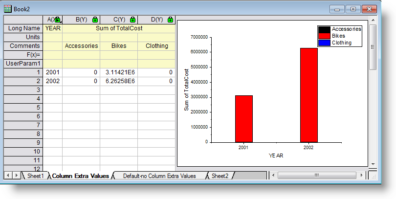
- Spalteninfo eingeben in: Die Namen der Spaltenkategorien werden standardmäßig in die Spaltenbeschriftungszeile Kommentar der Pivot-Tabelle eingefügt. Der Name der Kategorien kann jedoch in jede der Spaltenbeschriftungszeilen, die in dieser Auswahlliste festgelegt sind, eingefügt werden.
-
- Langname: Der Spaltenkategorienname wird in der Beschriftungszeile Langname ausgegeben.
-
- Kommentare: Der Spaltenkategorienname wird in der Beschriftungszeile Kommentar ausgegeben.
-
- An den Langnamen der Spalte anhängen: Der Langname der Kategorie Spalte im Quellarbeitsblatt wird an die Spaltenbeschriftungszeile Langname in der Pivot-Tabelle angehängt.
-
- Benutzerdefinierte Parameter: Andere Informationen (Kurzname oder Langname der Kategorien Spalte im Quellarbeitsblatt) der Kategorien Spalte werden in der Spaltenbeschriftungszeile Benutzerdefinierte Parameter der Pivot-Tabelle ausgegeben.
- Aus Spalte: Legen Sie den Quellwert der benutzerdefinierten Parameter fest. Diese Option ist nur verfügbar, wenn benutzerdefinierte Parameter unter Spalteninfo eingeben in ausgewählt ist.
-
- Kurzname: Wählen Sie Kurzname der Kategorien Spalte im Quellarbeitsblatt als Eingabeinformationen für die benutzerdefinierten Parameter.
-
- Langname: Wählen Sie Langname der Kategorien Spalte im Quellarbeitsblatt als Eingabeinformationen für die benutzerdefinierten Parameter.
Ausgabe der Ergebnistabelle in
Legen Sie fest, wo die Pivot-Tabelle mit den Ergebnissen ausgegeben wird. Klicken Sie auf die dreieckige Schaltfläche, um die Ausgabemethode festzulegen.
[<Eingabe>]<Eingabe>: Die Pivot-Tabelle wird in das aktuelle Arbeitsblatt eingefügt.
<neu>: Die Pivot-Tabelle wird in ein neues Blatt der aktuellen Arbeitsmappe eingefügt.
[<neu>]<neu>: Die Pivot-Tabelle wird in eine neue Arbeitsmappe eingefügt.